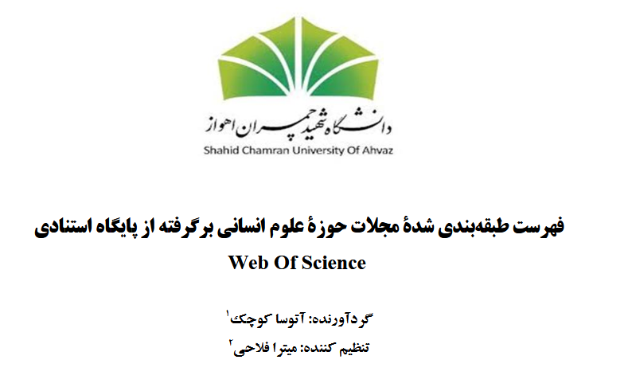

راهنمای نشریات علوم انسانی / ۱۶ حوزهٔ علمی
برای پژوهش علوم انسانی، نشریهٔ مناسب را پیدا کن.
متن کامل اهداف و حوزهٔ پوشش، دادههای داوری و پیوند هر نشریه را در یک فهرست جستوجو کن؛ موارد دلخواه را کنار هم ببین.
پیشنهاد نشریه بر اساس مقالهام ←۹۷۰ نشریه از فایل مرجع ۴۹۷ صفحهای · یک ردیفِ یادداشت منبع جداگانه نگهداری شده است.
جستوجوی هوشمند
در تمام اطلاعات مجله جستوجو کن
مقادیر «—» در منبع عدد مشخصی ندارند. متن خام همهٔ ردیفها در «جزئیات کامل» آمده است.
فهرست بارگذاری نشد
اتصال یا فایلهای داده را بررسی و صفحه را دوباره بارگذاری کنید.
نتیجهای پیدا نشد
عبارت کوتاهتر یا فیلترهای متفاوت را امتحان کنید.
پیشنهاددهندهٔ نشریه
مقالهات به کدام نشریه نزدیکتر است؟
عنوان، چکیده و کلیدواژهها را وارد کن تا نشریات این فهرست بر اساس متن حوزهٔ پوشش و اهدافشان رتبهبندی شوند.
نشریات پیشنهادی
ترتیب پیشنهادها بر پایهٔ اشتراک موضوعی با اطلاعات همین فهرست است؛ پیش از انتخاب، حوزهٔ نشریه را بررسی کنید.
متن مقاله فقط در همین مرورگر بررسی میشود و به سرور ارسال یا ذخیره نمیشود. اطلاعات نشریات را پیش از ارسال مقاله در سایت ناشر بررسی کنید.
دربارهٔ ما / اعتبار منبع
پشت این فهرست چه کسانی هستند؟
راهنمای نشریات علوم انسانی، اطلاعات فهرست پژوهشی زیر را برای جستوجو و مقایسه در دسترس قرار میدهد. دادهها از نسخهٔ در اختیار ما استخراج شدهاند و وضعیت روزِ نمایه، پذیرش یا زمان داوری نشریات را تضمین نمیکنند.

دانشگاه شهید چمران اهواز
فهرست طبقهبندیشدهٔ مجلات حوزهٔ علوم انسانی برگرفته از پایگاه استنادی Web of Science
- گردآورنده
- آتوسا کوچکی
- تنظیمکننده
- میترا فلاحی
این مشخصات از صفحهٔ عنوان فایل مرجع نقل شدهاند. اطلاعات هر نشریه را پیش از تصمیم برای ارسال مقاله در سایت همان نشریه بررسی کنید.
تهیهکنندهٔ وباپ: حسین کریمی ↗